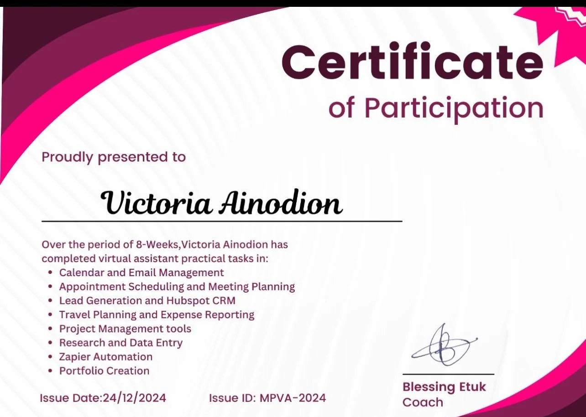
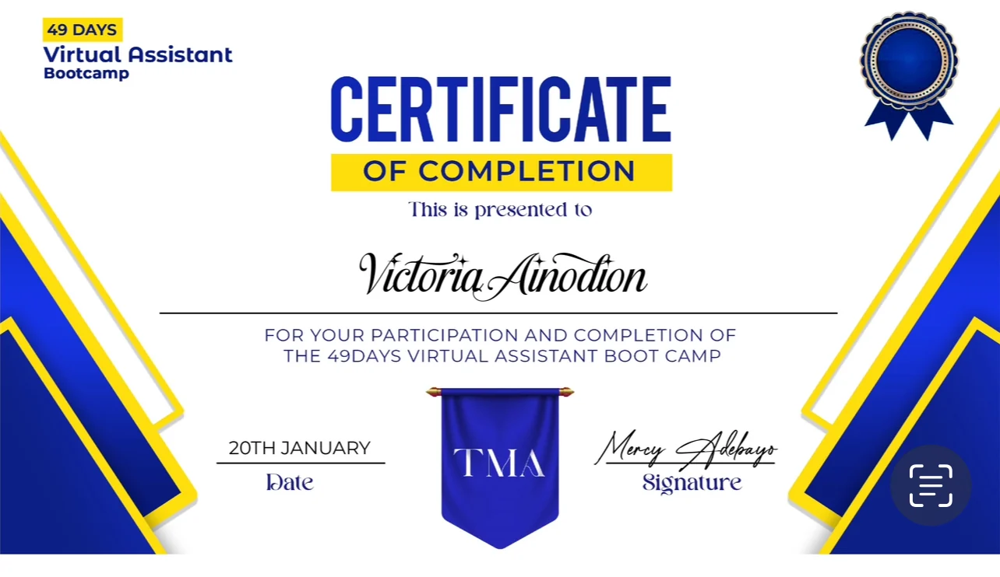

Executive assistance
Managing calendars, organising meetings, preparing correspondence and keeping the executive's priorities visible.
- Scheduling and appointment management
- Agendas, minutes and reminders
- Stakeholder follow-up
Hello, I'm
Executive Assistant Virtual Assistant Operations Support
I help busy executives stay organised, manage priorities and turn follow-ups into completed work.
Based in Abuja, Nigeria, I bring over four years of experience supporting executive schedules, correspondence, meetings, records and the details that need careful follow-through.
A meeting ends. A decision is made. A request is sent. What happens next matters. I help keep track of the next action, the person responsible and the information needed to move forward.
I'm Victoria, an Executive Assistant and Virtual Assistant based in Abuja, Nigeria.
My experience has taken me across executive support, administration, remote assistance and financial documentation. I've supported a company Chairman, an association President and a client based in New York.
One part of my work I particularly value is following things through. A meeting may end, a decision may be made or a document may be requested, but someone still needs to track the next action and make sure the right people have the information they need.
That's the kind of work I'm comfortable taking responsibility for. I enjoy organising information, communicating clearly and finding practical ways to make administrative work easier to manage.
Explore my experiencePractical support for the work behind the work.
Managing calendars, organising meetings, preparing correspondence and keeping the executive's priorities visible.
Keeping records, people and action points organised so work can continue after meetings and requests.
Supporting communication, task updates and schedules across locations and time zones.
Turning scattered information into records, trackers and summaries that are easier to check and use.
The eight case studies below use fictional information to explain my approach. Further down, you can also view screenshots I submitted from practical exercises and work samples.
A structured calendar showing meetings, preparation time, protected work blocks and follow-up reminders.
Decisions & next steps
Agendas, decisions, owners and deadlines organised so action points don't disappear after a meeting.
Comparing reported spending with released funds, receipts and original quotations.
| Name | Contact |
|---|---|
| A. Bello | Missing |
| Amina Bello | 0800… |
| A. Bello | 0800… |
| Name | Check |
|---|---|
| Amina Bello | Verified |
| Unknown | Review |
| Duplicate | Flagged |
Reviewing duplicates, correcting inconsistent fields and maintaining a usable membership tracker.
Bringing routes, stopovers, fares and conditions into one executive-ready comparison.
A simple system to separate urgent requests, decisions awaiting review and messages needing follow-up.
A visible board for what is pending, being worked on, waiting for feedback or already completed.
Good morning,
Following our meeting, please see the outstanding items below for your review and updates.
Kindly confirm the status of your assigned item by Friday.
Kind regards,Clear professional messages, follow-up correspondence, announcements and stakeholder updates.
A note on these samples: The layouts, names, dates and amounts shown above were created for this portfolio. They demonstrate the kind of work described in my experience; they are not actual employer screenshots or verified client results. Selected screenshots supplied for this portfolio appear below, kept separate from these fictional case studies.
These are selected screenshots Victoria supplied from practical exercises and work samples. They illustrate the layouts and tools she has worked with; they are not presented as audited client deliverables or proof of specific outcomes.
Screenshots of a 30-minute Calendly meeting option and an Outlook event showing time zone and reminder settings.
A task-board screenshot showing how work can be arranged across stages and deadlines.
An expense register with transaction categories, payment methods and a chart; amounts are from a sample sheet, not verified employer figures.
An agenda-format screenshot showing timed discussion items and their assigned leads, cropped to exclude the attendee section.
A business-research spreadsheet with company names, public web addresses and categories. Entries have not been independently checked.
A spreadsheet chart exercise included to show chart creation and layout. Its underlying figures are not independently verified.
Private inbox messages, named contact lists, client-specific records and current travel offers have been excluded. Open a screenshot for a larger view. Figures and research entries shown in training materials should not be treated as current or verified financial or market data.
On-site and remote roles across administration and support.
Coordinated the Chairman's calendar, meetings, correspondence and follow-up with department heads, suppliers, banks and other stakeholders. Prepared agendas, minutes and management updates, organised confidential records and tracked outstanding deliverables.
Supported the President with appointments, correspondence, meeting preparation and stakeholder communication. Maintained membership records in spreadsheets, reviewed inaccurate or duplicate entries and organised information for management review.
Coordinated scheduling and reminders across time zones, supported email communication and task follow-up, organised digital documents and provided updates on completed and pending work. Worked independently in a remote support arrangement.
Maintained transaction records, invoices and receipts; checked spreadsheet entries against supporting documents; responded to customer enquiries; and supported general office administration and financial record organisation.
Tools are useful when they make the work easier to manage.
Documents, meeting materials, spreadsheet records and presentations.
Shared files, communication, scheduling and online collaboration.
Tracking tasks, contacts, activity and outstanding follow-up.
Remote coordination, drafting and information organisation. AI-assisted work is reviewed by a person and handled with confidentiality precautions.
Executive correspondence · Meeting minutes · Records & file organisation · Invoice documentation · Action-point trackers · Research summaries · Calendar coordination · Administrative reporting · Email follow-ups
My formal education and certificates from practical virtual assistance training. Awarding institution details for the HND and Computer Studies diploma can be added once confirmed.
Banking and Finance
Certificate of participation · 24 December 2024
Certificate of completion · date on certificate: 20 January
Listed on my CV
Photographs of the certificates I supplied. Select a certificate to view the full image.


The eight-week training certificate lists practical tasks covering calendars, inboxes, meeting planning, HubSpot CRM, travel, expense reporting, project tools, research and Zapier automation. These are documented training topics; they are not claims of advanced proficiency or certification in every tool.
I'm open to conversations about executive assistance, virtual assistance and administrative or operations support opportunities.